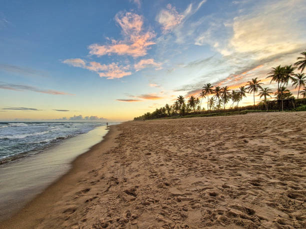
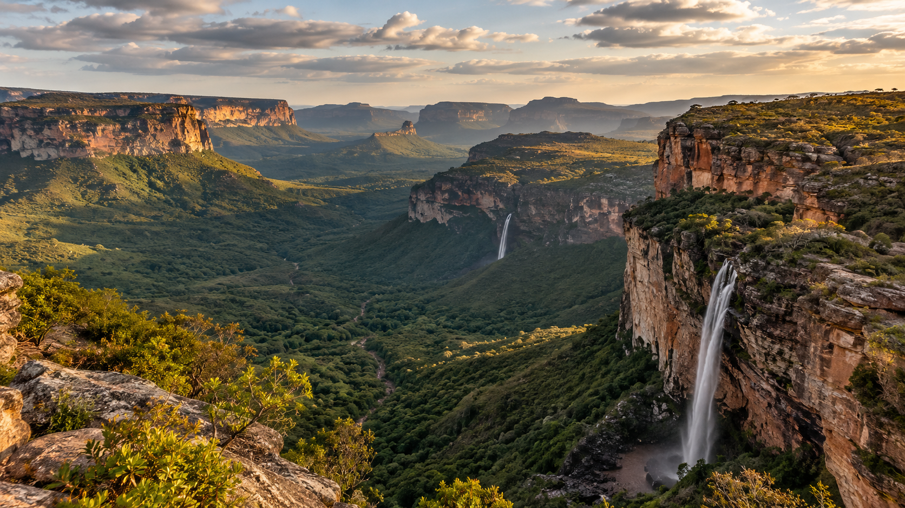
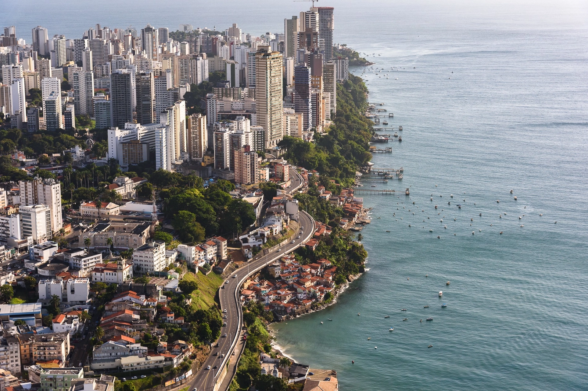

Conheça nossos destinos favoritos:
Praia do Forte
A Praia do Forte é um destino turístico localizado no litoral da
Bahia, Brasil. É conhecida por suas belas praias de areia branca,
águas cristalinas e recifes de corais. A região também abriga o
Projeto Tamar, uma iniciativa de conservação das tartarugas
marinhas. Além disso, a Praia do Forte oferece uma variedade de
opções de hospedagem, restaurantes e atividades ao ar livre,
tornando-se um local popular para turistas que buscam relaxamento e
contato com a natureza.

Chapada Diamantina
A Chapada Diamantina é uma região montanhosa localizada no estado da
Bahia, Brasil. É conhecida por suas paisagens deslumbrantes,
incluindo cachoeiras, grutas, vales e formações rochosas
impressionantes. A região é um destino popular para os amantes da
natureza e do ecoturismo, oferecendo trilhas para caminhadas,
escaladas e passeios de aventura. Além disso, a Chapada Diamantina
possui uma rica biodiversidade e é lar de diversas espécies de fauna
e flora. É um local ideal para quem busca contato com a natureza e
experiências ao ar livre.

Salvador
Salvador é a capital do estado da Bahia, Brasil, e é conhecida por
sua rica história, cultura vibrante e belas praias. A cidade possui
um centro histórico chamado Pelourinho, que é famoso por suas ruas
de paralelepípedos, arquitetura colonial e igrejas históricas.
Salvador também é famosa por seu carnaval animado, música
afro-brasileira e culinária deliciosa. Além disso, a cidade oferece
uma variedade de opções de lazer, incluindo museus, teatros e
festivais culturais, tornando-se um destino turístico popular para
visitantes de todo o mundo.

Sobre a TripWay
A TripWay é uma empresa de viagens que busca facilitar a descoberta
de novos destinos e experiências. Nosso objetivo é ajudar viajantes
a conhecer diferentes lugares, encontrar opções de viagem e planejar
momentos especiais de forma simples e prática.